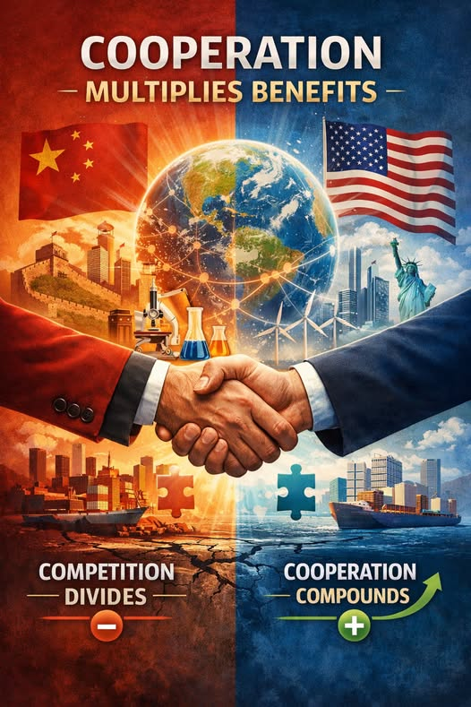

← Terra Nova Development — Article Index
Article #139
Cooperation Multiplies Benefits: Why America, China, and the World Must Build the Future Together
How cooperation with China and every nation can multiply the benefits of human ingenuity.

Imagine the United States and China deciding that their greatest achievement would not be defeating one another, but working together to improve life for everyone on Earth. Imagine combining American innovation, Chinese manufacturing, European research, and the knowledge of every other nation. Our shared problems deserve shared solutions.
Competition Is a Tool, Not Our Destiny
Competition can encourage invention, but it is not automatically the best way to organize civilization. Two teams racing to cure the same disease may duplicate years of work. By sharing discoveries, they could reach a treatment sooner. Patients care whether the cure works, not who wins the contest.
China Is a Resource for Humanity
China has developed substantial expertise in high-speed rail, solar manufacturing, batteries, electric vehicles, and infrastructure. These achievements are opportunities to learn, not reasons for automatic hostility. The United States has equally important discoveries to share. We should evaluate ideas by their effectiveness, not the nationality of their inventors.
The Cost of Reinventing Everything
Countries sometimes need independent capacity for security and resilience. But duplication is not always independence. It can also mean spending years and billions reproducing something already demonstrated elsewhere. International research, fair licensing, and technology exchanges can help societies adopt useful solutions more quickly.
Cooperation Compounds Benefits
One nation improves irrigation; another improves agricultural machinery; a third develops better soil management. Combined, these advances may create a food system more productive than any one discovery. Knowledge builds on knowledge. Cooperation turns separate breakthroughs into multiplying benefits.
Learning Is a Sign of Strength
America does not become weaker by learning from China. China does not become weaker by learning from America. The strongest civilization is not the one that refuses to learn from others; it is the one that learns from everyone. Pride should never become an obstacle to human well-being.
Shared Problems Cross Borders
Disease, climate change, ocean pollution, and the need for clean water do not respect borders. A global effort on desalination, cancer research, affordable housing, or disaster response could save time, money, and lives. Every region has knowledge worth contributing.
Cooperation Does Not Require Agreement
The United States and China have genuine disagreements about trade, security, political systems, and human rights. Cooperation should not erase those concerns. Appropriate safeguards, reciprocity, intellectual-property protections, and accountability make practical partnerships possible even when differences remain.
Measure Human Achievement, Not National Victory
What if we measured success by the number of homes built, people receiving care, children educated, and communities gaining clean water? These outcomes matter more than the prestige of finishing first. National achievements can remain sources of pride without requiring anyone else to fail.
Terra Nova and Shared Abundance
Terra Nova Development begins with the observation that humanity already possesses extraordinary productive capacity and knowledge. Projects such as Terra Nova University, Give and Take Community Centers, and global healthcare cooperation could turn shared knowledge into accessible benefits. Distribution and coordination often matter as much as invention.
Economic Gains from Practical Partnership
Avoidable confrontation, duplicated research, and fractured supply chains impose real costs. Not every strategic expense can be eliminated, but sensible cooperation can free resources for infrastructure, healthcare, education, and scientific progress. Fair agreements must also protect workers and communities.
Our Greatest Rival Is Preventable Suffering
The challenges worthy of our collective intelligence are disease, hunger, ignorance, environmental damage, and unnecessary suffering—not the existence of other human beings. We do not need to defeat China to improve American healthcare or defeat America to improve Chinese prosperity.
A Practical Path Forward
Begin with achievable partnerships: medical research, clean-energy standards, water conservation, disaster preparedness, and academic exchanges with appropriate security protections. Evaluate each partnership by its real outcomes. Did it improve lives, lower costs, and reduce the chance of conflict?
Conclusion: There Is No Them. There Is Only Us.
Competition asks who can win. Cooperation asks what we can accomplish together. The world does not need a future in which America defeats China. It needs a future in which America, China, and every other nation help humanity overcome the problems that have burdened it for centuries. There is no them. There is only us.